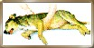
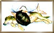
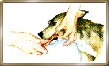
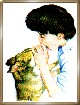
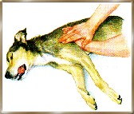

|
(deel 3) Reanimatie
in het kort
Ademhaling
Als je de borstkas niet ziet bewegen, leg dan je hand erop om beweging te
voelen die aangeeft dat de hond ademt.

Kunstmatige ademhaling:
Een techniek die ook wel mond-op-neus
beademing wordt genoemd. Het doel van deze techniek is dat je hond van
lucht wordt voorzien totdat hij zelf voldoende kan ademen. Leg de hond
plat op zijn zij. Open de bek, trek de tong naar voren en verwijder
blokkades als braaksel, een vastzittend botje, bloed of slijm.
Sluit de bek van de hond en hou deze dicht met een hand. Let op de
borstkas van de hond. Vorm met de andere hand, met uw wijsvinger en
duim, een 'O' en houd deze over de neus van de hond. Druk uw vingers
strak aan, waardoor je een luchtdichte ring vormt. Blaas erin totdat u de
borstkas van de hond ziet uitzetten.
Haal uw mond van uw vingers en laat de longen helemaal leeglopen. Herhaal dit om de vijf seconden totdat de hond zelf begint te ademen.
Combineer dit met hartmassage als je geen hartslag of pols voelt.
Cardiopulmonale reanimatie:
CPR is een combinatie van kunstmatige
ademhaling en hartmassage. Het primaire doel van hartmassage is dat er
voldoende druk op het hart wordt uitgeoefend om bloed naar de hersenen
te pompen, waardoor de hond in leven blijft totdat je professionele hulp
krijgt. Als je besluit dat hartmassage nodig is, laat dan iemand meteen
contact opnemen met de dierenarts. Zorg ervoor dat de dierenarts zo
spoedig mogelijk komt: het geven van hartmassage vereist een grote
inspanning van een persoon. Blijf de pols controleren terwijl je
hartmassage geeft.
Leg een kleine hond op de rechterzij met zijn kop iets lager dan zijn
lichaam en plaats je duim en vingers aan weerskanten van de borst direct
achter de ellebogen. Plaats je andere hand op de rug van de hond om zijn
lichaam te ondersteunen.
Knijp twee keer per seconde in de borst met snelle, stevige
pompbewegingen (het hart wordt ingedrukt en er circuleert bloed door het
lichaam). Dien tien seconden hartmassage toe en vervolgens vijf seconden
kunstmatige ademhaling. Blijf dit herhalen tot je een hartslag voelt.
Stop dan met de hartmassage en concentreer u op de kunstmatige
ademhaling. Blijf ondertussen de pols controleren.
Plaats een middelgrote hond plat op zijn rechterzij met het hoofd lager
dan het lichaam. Plaats de muis van een hand op de borst direct achter
de elleboog. Plaats je andere hand boven op de eerste. Maak stevige
pompende bewegingen, ongeveer zestien keer per tien seconden. Combineer
dit met kunstmatige ademhaling zoals hierboven beschreven.
Grote honden met een diepe borstkas kunnen het beste op hun rug worden
gelegd met het hoofd lager dan het lichaam. Plaats de muis van een hand
op het eind van het borstbeen en de andere hand boven op de eerste. Druk
de borst steeds stevig in, in de richting van de kop, en herhaal deze
pompende beweging dertien keer per tien seconden. Combineer dit met
kunstmatige ademhaling. Vergeet niet de pols regelmatig te controleren
en stop met de hartmassage als het hart van de hond vanzelf begint te
kloppen.
Hartmassage kan heel wat kneuzingen veroorzaken, maar dit is een
situatie van leven of dood en het is veel belangrijker om zuurstofrijk
bloed te laten circuleren door het lichaam van je hond totdat er
professionele hulp beschikbaar is. CPR is makkelijker als twee mensen
het doen: een past mond-op-neusbeademing toe (elke tien seconden vijf
seconden beademen) en de ander hartmassage (tien tot twintig
pompbewegingen gedurende tien seconden, met pauzes als de borstkas vol
wordt geblazen). Als de verwondingen van de hond ernstig zijn (met veel
bloedverlies bijv.), kan CPR zonder resultaat blijven. Als je na vijf
minuten CPR te hebben toegepast nog geen pols voelt, dan is de kans
klein dat je het leven van je hond zal kunnen redden.
Hartslag
Na de ademhaling van je hond te hebben gecontroleerd, controleer je zijn
pols en hartslag.

Vrije luchtwegen
Leg de hond plat op zijn zij. Open de mond, trek de tong naar voren en
controleer op blokkades als braaksel, een vastzittend botje, bloed of
slijm. Verwijder dit.

Kunstmatige ademhaling
Vorm met een wijsvinger en duim een 'O' en hou deze over de neus van de
hond. Druk je vingers strak aan zodat u een luchtdichte ring vormt.
Blaas door de ring.

Hartmassage
Plaats een middelgrote hond op zijn rechterzij. Plaats de muis van een
hand op de borst en plaats je andere hand bovenop de eerste.

Ferry,
de hondenfluisteraar heeft me toestemming gegeven om het gedeelte van de eerste
hulp bij ongevallen over te nemen van zijn website. Bedankt Ferry
|